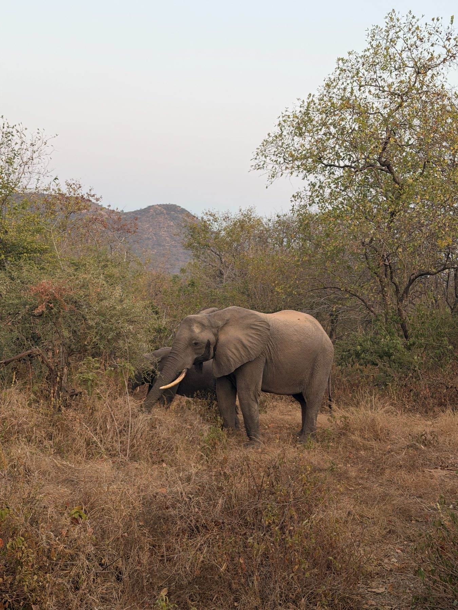

GIS & Geography
Zander Hirman
Hello, I'm Zander! My love for geography started in the Colorado Rockies. Growing up hiking and skiing showed me firsthand how deeply connected we are to our physical environment. Living and studying in Boulder, a city with one of the country's oldest deliberately protected open space systems and over 150 miles of trails, brought that concept to life. It’s why I’m drawn to GIS, using spatial data to help communities make smarter decisions and better connect with the landscapes around them. CU Boulder | Class of '26.
Field Pictures
